(Opmerking: Gewoon gekopieerd van www.matroska.org .)
Matroska™ heeft het doel uit te groeien tot de indelingsnorm voor Multimedia houders. Het werd afgeleid van het project MCF, maar onderscheidt zich aanzienlijk, omdat het gebaseerd is op EBML (Extensible Binary Meta Language), een binaire afgeleide van XML. EBML geeft het Matroska™ ontwikkel team significante voordelen in termen van toekomstige indeling & uitbreidbaarheid, zonder te breken met de bestandsondersteuning van de oude ontleders.
Als je nog meer informatie wilt hebben ga dan naar Matroska™ 's thuis pagina.
mkvmerge en mkvmerge GUI (of gewoon mmg) zijn twee programma's gemaakt door Moritz Bunkus. Zij zijn een onderdeel van het mkvtoolnix pakket. Mkvmerge kan een heel scala aan multimedia bestanden lezen en die inhoud plaatsen in Matroska™ bestanden. Helaas is dit een commando regel programma (DOS), en niet iedereen is even handig met de commando's op de DOS prompt. Dat is precies waar mkvmerge GUI om de hoek komt kijken. Het is een grafische schil voor mkvmerge die de gebruiker een intuïtieve maar krachtige mogelijkheid geeft naar mkvmerge commando's.
Beide programma's zijn beschikbaar voor zowel Windows als GNU/Linux en andere Unix achtige. De programma's zijn uitgebracht onder de GPL voorwaarden, daarom is de broncode voor iedereen die geïnteresseerd is beschikbaar.
Je kunt de laatste versie van mkvtoolnix altijd vinden op mkvtoolnix Moritz Bunkus' website. Linux/Unix gebruikers zullen waarschijnlijk de broncode van mkvtoolnix downloaden en daarna zelf compileren.
Deze gids focust zich alléén tot de "grafische schil" deel van dit hulpmiddel. Alle commandoregel opties worden tot in detail uitgelegd mkvmerge's handleiding html pagina.
(Opmerking: Deze sectie bespreekt niet het compileren of installeren van mkvmerge. Mkvmerge's heeft haar eigen documentatie en README bestanden, die zijn bijgevoegd in het mkvtoolnix pakket.)
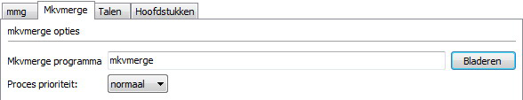
Plaatje 1: Gebruik deze knop om de locatie van
het mkvmerge programma op te geven.
Het enige dat mmg moet weten is, de locatie van het mkvmerge binaire/programma. Onder normale omstandigheden wordt het automatisch gevonden. Als dat niet het geval is, dan kan je hier selecteren waar het binaire/programma zich bevind, kies Bestand vervolgens Opties en daarna de Mkvmerge tabblad.
Mkvmerge maakt een strikt verschil tussen bestanden en sporen. Een invoer bestand bevat gewoonlijk één of meer sporen. Mkvmerge heeft ten minste één invoer bestand en een Matroska™ bestandsnaam nodig. Laatste wordt automatisch aangemaakt net voordat Mkvmerge start. Beginnen met deze minimale opties, kan de gebruiker één of meer invoer bestanden toevoegen, selecteren van specifieke/extra opties voor elk spoor, voeg globale opties toe, via het tabblad Globaal voor meer opties etc.
Typische basis stappen zijn:
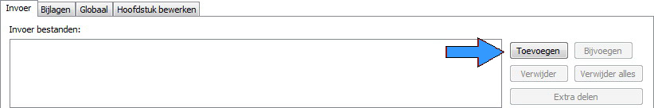
Plaatje 2: Gebruik deze knop voor toevoegen & verwijderen van bestanden.
Wanneer mmg is opgestart, toont het de eerste en waarschijnlijk het belangrijkste tabblad: Het Invoer tabblad. Hier zie je vier verschillende elementen. Het meest hoogste is het invoer scherm waarin alle ingevoerde bestanden staan. Direct daaronder vind je de opties die tot het huidig geselecteerde invoer bestand behoort.
Plaatje 2 toont 5 knoppen aan de rechterzijde van het bovenste invoer scherm. Deze kunnen worden gebruikt, om bestanden aan het invoerscherm toe te voegen met Toevoegen of Bijvoegen of Extra delen toe te voegen. Geselecteerde bestanden te Verwijderen of met Alles verwijderen
Er is een verschil tussen het toevoegen en het bijvoegen van een bestand. Gewoonlijk worden alle sporen toegevoegd aan een bestand. Daardoor wordt aan het uiteindelijke Matroska™ bestand, een bestand parallel toegevoegd. Dit is gewoonlijk het geval, als je b.v. een video bestand hebt, één of meer geluidssporen en één of meer ondertitel sporen. Zij bevatten allen materiaal, dat bij dezelfde tijd code behoort en tegelijkertijd moeten worden afgespeeld.
Bijvoegen van een bestand aan de anders kant, zal er voor zorgen dat alle sporen van het tweede bestand worden toegevoegd aan een eerder toegevoegd bestand. Op die manier, wordt de inhoud van het ene spoor direct na de ander afgespeeld (niet parallel maar in serie). Je kunt alléén sporen van hetzelfde type samenvoegen (video naar video sporen etc.), hebben dezelfde codec (b.v. MP3 naar MP3 maar niet MP3 naar AC3) en met dezelfde kwaliteit/parameters (b.v. sample rate 48.0 KHz).
Je kunt het verschil zien, tussen een toegevoegd bestand en een bijgevoegd bestand
door naar de naam te kijken. Bijgevoegde bestanden en sporen starten allemaal met
"++>".
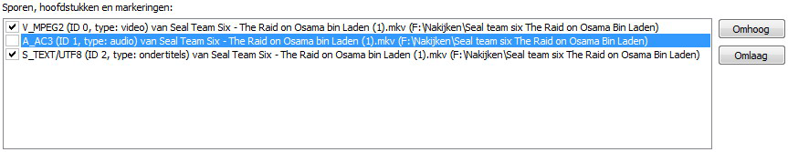
Plaatje 3: Twee aan en één uit gevinkt spoor.
Het tweede spoor wordt niet gekopieerd naar het uitvoerbestand.
Zodra de gebruiker ten minste één invoerbestand heeft toegevoegd in de bovenste keuzelijst, zal de tweede keuzelijst alle beschikbare sporen tonen. Elk spoor, is standaard actief en zal worden samengevoegd in het uiteindelijke bestand. Echter, dit kan je veranderen, door te klikken op het vakje precies voor de naam van de spoor in de tweede keuzelijst. Dit is weergegeven in plaatje 3.
Voor elk van deze sporen kan de gebruiker specifieke spoor opties selecteren met de invoervelden en selectievakjes onder de spoor lijst. Deze opties zullen beschreven worden in de volgende secties.
Aan de rechterkant van de spoor lijst scherm, zitten twee knoppen waarmee
je de controle hebt over de volgorde in het uitvoer bestand, door te drukken
op de Omhoog en Omlaag knop. Het huidig geselecteerde spoor, wordt verplaatst
conform de ingedrukte knop. Er zijn enige beperkingen m.b.t. heen en weer verplaatsen
van Bijgevoegde sporen (diegene die vooraf gegaan worden met "++>")
zoals een bijgevoegd spoor niet het eerste spoor mag zijn, enz.
Zodra de gebruiker een invoerbestand heeft toegevoegd en geselecteerd,
kan hij de opties instellen die van toepassing zullen zijn op dat specifieke bestand.
Op dit moment, heeft het programma drie opties, die zijn allen alléén beschikbaar voor
Matroska™ bestanden: Géén hoofdstukken, Géén bijlagen
en Géén markeringen. Deze opties vertelt mkvmerge geen enkele
hoofdstukken / bijlagen / markeringen van het huidige bronbestand te kopiëren.
Meer informatie over hoofdstukken kunnen worden gevonden in de sectie over Het hoofdstuk bewerker in dit document en in mkvmerge's eigen documentatie.
Afhankelijk van het huidig geselecteerde type spoor (audio, video, ondertitels) of zelfs afhankelijk van de inhoud van het spoor, zullen slechts een deel van de specifieke spoor opties beschikbaar zijn. Deze opties omvatten meer dan twee sub-pagina's. Er zijn Algemene spoor opties, Specifieke formaat opties en Extra opties.
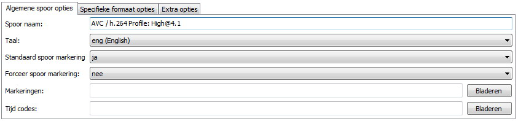
Plaatje 4: Gemeenschappelijke opties voor alle soorten sporen
Opmerking: Tenzij ter zijde geschoven door de gebruiker, zal mkvmerge ofwel de instellingen kopiëren van het invoerbestand als de bron-formaat dergelijke informatie ondersteunt, of het zal gebruik maken van gevoelige standaardwaarden.
De beschikbare algemene opties zijn:
Spoor naam: De gebruiker kan een naam instellen voor het huidige
spoor. Deze naam is een vrije-vorm regel Praktische voorbeelden zouden kunnen zijn
'Regisseur commentaar' of 'Prachtig uitzicht op Amsterdam'. Opmerking: Dat deze
namen niet zijn bedoeld om de filmtitel te bevatten!Taal: De gebruiker kan de taal selecteren voor elk spoor
onafhankelijk van het type. Deze taal is gecodeerd in het ISO639-2 taal code.
De uitklaplijst bevat alle ISO639-2 codes, dus als gebruiker hoef je je geen zorgen
te maken over kiezen van een verkeerde taal code.Standaard spoor markering: Matroska™ kent een markering, die
de af speler vertelt dat een specifiek spoor de voorkeur heeft bij afspelen, tenzij,
de gebruiker een ander heeft spoor opgegeven. Natuurlijk, heeft elk spoor type zijn eigen
standaard spoor, b.v. het standaard geluidsspoor is de Engelse, en de
standaard ondertitel spoor is de Nederlandse. Als er geen spoor als
standaard spoor wordt ingesteld, dan zal mkvmerge de voorkeur geven aan elk eerste
spoor type dat het vindt als standaard spoor. Dit komt overeen met het gedrag van
verschillende mediaspelers.Geforceerde spoor markering: Matroska™ kent een markering, die
de af speler vertelt dat een specifiek spoor de voorkeur heeft bij afspelen, tenzij,
de gebruiker een ander heeft spoor opgegeven. Natuurlijk, heeft elk spoor type zijn eigen
standaard spoor, b.v. het standaard geluidsspoor is de Engelse, en de
standaard ondertitel spoor is de Nederlandse. Als er geen spoor als
standaard spoor wordt ingesteld, dan zal mkvmerge de voorkeur geven aan elk eerste
spoor type dat het vindt als standaard spoor. Dit komt overeen met het gedrag van
verschillende mediaspelers.Markeringen: Voor elk spoor kan je een XML markeringsbestand aanmaken.
Voor een volledige uitleg van alle markeringen verwijzen wij je naar het voorbeeld bestand
en de eigen documentatie van mkvmerge's. In waarschijnlijk
99% van alle gevallen dat je deze optie wilt gebruiken en markeringen wil associëren met
een specifieke spoor. Is de markering optie op het tabblad Globaal waarschijnlijk niet
wat je nodig hebt.Tijd codes: Normaal zal mkvmerge voor elk beeld de
tijdcodes afleiden vanuit het bronbestand. Maar het kan ook tijdcodes lezen en
gebruiken uit een extern tekstbestand waarvan je de naam hier kunt opgeven.
Deze functie is een zeer geavanceerde functie. Bijna alle gebruikers moeten
deze vermelding leeg laten.
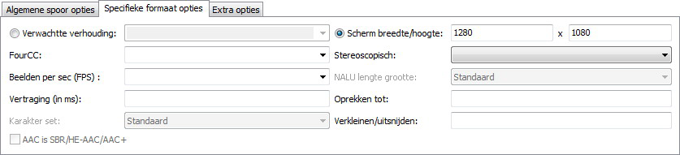
Plaatje 5: Typische opties voor een video spoor
Het specifieke formaat opties omvatten:
Verwachtte verhouding: Met deze optie, kan de gebruiker de beeldverhouding
instellen die moet worden gebruikt bij het afspelen. De standaardwaarde, is de verkregen
verhouding waarmee de film werd gecodeerd maar deze kan worden gewijzigd, b.v. voor anamorphotische
(systematische vertekening) coderingen. De grafische schil verwacht een indeling ofwel in een decimaal format
(b.v. '2.33') of een fractie (b.v. '16/9').
FourCC: Matroska™ slaat normaal de Four-CC niet op
welke vaak gebruikt wordt in andere inhoudsformaten ter identificatie van de gebruikte codec.
Matroska™ heeft haar eigen format, genaamd, CodecID, maar het heeft ook een AVI
compatibiliteits mode. In deze mode wordt de FourCC ook opgeslagen. Met deze optie
kan de FourCC geforceerd opgeslagen worden in een andere waarde. Echter, je kunt
het CodecID niet veranderen welke door mkvmerge gebruikt wordt.
Stereoscopisch: Er is een technologie, die
pseudo driedimensionale beelden verstrekt door het afspelen van twee
video-sporen die tegelijkertijd zijn opgenomen vanuit een iets andere
positie. Elk oog, ziet één van die sporen dit noemen wij stereo mode.
Meeste gebruikers dienen dit leeg te laten.
Beelden per sec (FPS): Het aantal van beelden per seconde (fps) voor
AVC/h.264 video sporen. Wanneer je een AVC/h.264 elementaire hoofdstroom toevoegt
dan zal aan mkvmerge vertelt moeten worden, met hoeveel beelden per seconde
deze video was opgenomen, omdat dat stukje informatie in de hoofdstroom niet
beschikbaar is. Als je niets opgeeft, dan zal mkvmerge de standaard zetten naar 25.
Je kunt dit ingeven met decimale waarden (b.v. 29.97) of met fracties (b.v. 30000/1001).
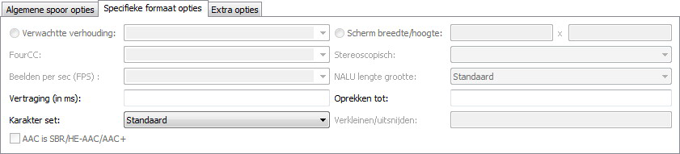
Plaatje 6: Typische opties voor een audio spoor
Vertraging (in ms): In sommige gevallen zijn audio en video niet
correct gesynchroniseerd. Met deze optie kan de gebruiker de tijd codes
van elk spoor verschuiven met een opgegeven waarde, zowel positief als negatief.
Het aantal dat je hier ingeeft, is het aantal in milliseconden
die worden toegevoegd aan elke tijd code na de Oprekken tot
waarde die is toegevoegd (zie hieronder).
Oprekken tot: In sommige gevallen zullen de video en audio sporen
langzaam aan verschuiven gedurende het afspelen. Dit kan opgelost worden, door een factor
waarmee tijd codes opgerekt dienen te worden op te geven aan mkvmerge.
Is er niets opgegeven, dan wordt '1.0' aangenomen, welke de tijd codes niet veranderen.
Vertraging is toegevoegd (zie hierboven).
Karakter set: Sommige tekst ondertitel formaten bewaren het
gebruikte karakter set waarmee ze gemaakt werden niet. Dit is belangrijk, omdat tekst
ondertitels automatisch worden geconverteerd naar het UTF-8 karakter set tijdens het
samenvoegen. mkvmerge zal normaal gesproken aannemen, dat de systeem huidige
karakter set dezelfde is waarmee de ondertitel tekst bestand mee geschreven was. Maar
in het geval dat dit niet het geval is, kan de gebruiker het juiste karakter set corrigeren.
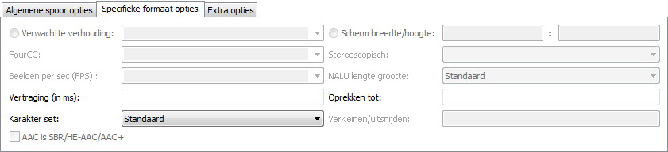
Plaatje 7: Typische opties voor tekst ondertitel sporen
AAC is SBR/HE-AAC/AAC+: De nieuwe technologie genaamd 'high
efficiency AAC' heeft enkele nadelen, wanneer het wordt opgeslagen in
.AAC bestanden: Het is niet mogelijk het HE-AAC deel voor deze
bestanden te detecteren. Daarom moet de gebruiker deze optie handmatig te
controleren, indien van toepassing. Houd er rekening mee dat dit probleem niet
bestaat voor HE-AAC opgeslagen in .MP4 bestanden.
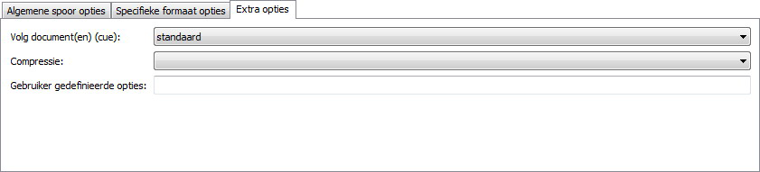
Plaatje 8: Typische opties voor Cues
Cues: De cues zijn voor Matroska™ wat de index is
voor AVI bestanden. Zij bevatten linken naar sleutelbeelden. Gewoonlijk dien
je deze optie op zijn 'standaard' waarde te laten staan. Mkvmerge zal automatisch
de beste methode kiezen voor een bepaald type spoor. Een volledige uitleg over
sporen kan gevonden worden in mkvmerge's documentatie.Compressie: Matroska™ beschikt over een krachtig comprimeer
systeem voor sporen met een verliesvrije compressie algoritmen. Deze
compressie kan op elk spoor worden toegepast, maar sommige af spelers ondersteunen
dit alleen voor VobSub sporen. Hier is het meest bruikbaar. Andere
sporen, speciaal audio en video sporen, zijn al gecomprimeerd dus...
die extra compressie, zal geen extra resultaat hebben. Voor VobSubs kan
je een extra resultaat behalen van ongeveer 30% als je zlib compressie aanzet.
dat is waarom dat standaard is voor VobSub sporen.
Gebruiker gedefinieerde opties:
2
Matroska™ bestanden kunnen ook andere bestanden bevatten. Dit werkt als basis, precies hetzelfde als je favoriete email programma. De achterliggende gedachte is, extra informatie te verschaffen over het bestanden. Sommige voorbeelden zouden kunnen zijn, CD/DVD/Blu-ray hoezen van een geripte CD/DVD/Blu-ray, extra achtergrond informatie in tekst over de film, of zelfs een paar gecomprimeerde lettertypen voor de ondertitels.
Elke bijlage heeft twee dingen nodig: Bestandsnaam (lijkt mij duidelijk) en het MIME type dat geassocieerd zou moeten worden met het bestand. Het gebruik is gemakkelijk en in overeenstemming met het toevoegen van bestanden via de invoer input tab.
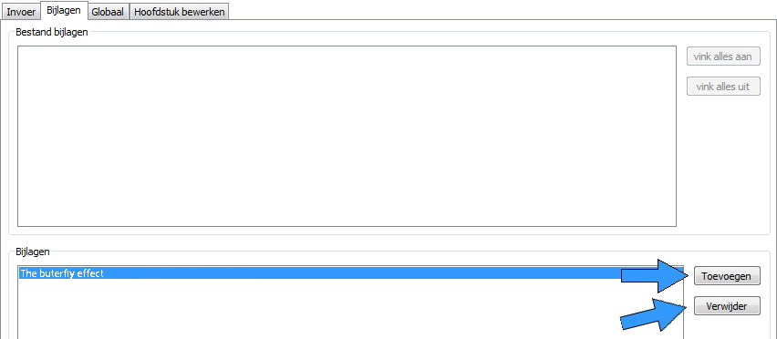
Plaatje 9: Toevoegen en verwijderen van bijlagen met deze knoppen.
Op het tweede tabblad van de Bijlagen tabblad, kan je een bestand met de Toevoegen knop en het verwijderen van de geselecteerde bijlage met de Verwijderen knop. Wanneer eenmaal een bijlage is geselecteerd dan worden de overige opties in dit tabblad beschikbaar. Voor elke bijlage moet je het MIME type selecteren, maar de beschrijving is optioneel. Maar het is een goed idee om altijd een beschrijving op te geven. Dit maakt het voor anderen makkelijker om te achterhalen wat jij hebt toegevoegd aan dit Matroska™ bestand.
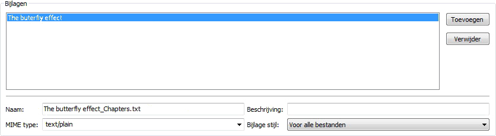
Plaatje 10: Typische opties voor een bijlage
De laatste optie, Bijlage stijl: wordt alleen berekend,
wanneer u ook de uitvoer splitst in verschillende bestanden. (Splitsen in het algemeen,
wordt uitgelegd in de volgende sectie.) Als de optie Voor alle
bestanden is geselecteerd, dan wordt het huidige bestand gekoppeld aan alle
aangemaakte uitvoer bestanden. Als de optie Alleen de eerste is
geselecteerd, dan wordt de bijlage alléén aan het eerste aangemaakte uitvoer bestand
gekoppeld
Het derde tabblad, Globaal, staat bol van de opties die van toepassing zijn op het volledige bestand en niet alleen voor één of meer sporen.
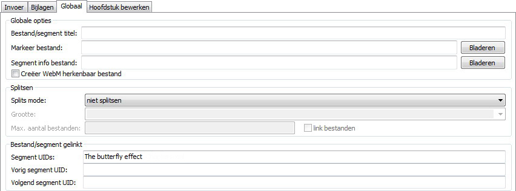
Plaatje 11: Een titel selecteren voor de film
Bestand/segment titel: Deze titel wordt gebruikt voor de eigenlijke
film titel, bv. 'The butterfly effect'.
De Splitsen sectie beschrijft, hoe een uitvoer
bestand in meerdere kleinere bestanden gesplitst wordt. Is splitsen
niet aangezet, wordt er één groot bestand aangemaakt.
Als splitsen is aangezet, dan kan je aan mkvmerge opgeven,
wanneer er gestart moet worden met een nieuw bestand na een bepaalde
grootte of tijd. De geaccepteerde formaten zijn:
HH:MM:SS.nnn
tot aan negen cijfers (nanoseconde precisie) of een getal
gevolgd door de letter 's' daarmee aangevende het aantal seconden.
Verschillende tijd codes kunnen worden ingegeven gescheiden door een
komma.
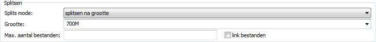
Plaatje 12: Typische opties voor splitsen. Twee bestanden aanmaken
welke ongeveer 700meg groot zijn.
Niet linken: Deze optie regelt hoe mkvmerge het
splitsen zal afhandelen. Een kleine uitleg van deze mogelijkheid:
Matroska™ ondersteunt bestand linken, wat simpelweg betekend, dat een bepaald bestand de voorganger of opvolger is van het huidige bestand. Om precies te zijn, het zijn niet echt de bestanden die gelinkt zijn, maar de Matroska™ segmenten. En de meeste bestanden bevatten alleen één Matroska™ segment de volgende uitleg gebruikt de term 'bestand linken' hoewel 'segment linken' meer op zijn plaats zou zijn.
Elk segment wordt geïdentificeerd door een uniek 128 bit lang segment UID. Dit UID wordt automatisch gegenereerd door mkvmerge. Het linken wordt primair gedaan via het zetten van het segment UID's van het volgende/vorige bestand naar het segment kop informatie Mkvinfo print deze UID's als het hen vindt.
Als een bestand wordt gesplitst in meerdere kleinere bestanden en linken wordt gebruikt, dan zullen de tijd codes niet opnieuw starten op 0 maar doorgaan op daar waar het vorige bestand eindigde. Op deze manier zal absolute de tijd code behouden blijven, zelfs wanneer het vorige bestand niet aanwezig/beschikbaar is (b.v. bij streaming). Als er géén linken is gebruikt, dan zouden de tijd codes moeten starten op 0 voor elk bestand. Standaard gebruikt mkvmerge bestand linken niet, omdat de meeste af spelers nog steeds gelinkte bestande niet juist behandelen. Als je wilt kan je dit aanzetten, door Bestanden linken af te vinken
Ongeacht of het splitsen actief is of niet, de gebruiker kan mkvmerge
vertellen het geproduceerde bestand te linken naar een specifiek UID's.
Dit kan worden gedaan, door een geldig segment UID in de twee invoervelden,
Vorig segment UID en Volgend segment UID. Deze opties
accepteren een segment UID in het formaat dat mkvinfo uitvoert: 16 hexadecimale
nummers tussen 0x00 en 0xff voorgevoegd met 0x elk en gescheiden met een spatie, b.v.
0x41 0xda 0x73 0x66 0xd9 0xcf 0xb2 0x1e 0xae 0x78 0xeb 0xb4 0x5e 0xca 0xb3 0x93.
Als alternatief kan een kortere vorm worden gebruikt: 16 hexadecimale nummers tussen 0x00 en
0xff zonder de 0x voorvoegsel en zonder spaties, b.v. 41da7366d9cfb21eae78ebb45ecab393.
Als splitsen wordt gebruikt, dan is het eerste bestand gelinkt naar het
UID opgegeven in de Vorige segment UID invoer veld en het
laatste bestand is gelinkt naar UID opgegeven in de Volgende segment
UID invoer veld. Als splitsen niet is gebruikt, dan zal één uitvoer
bestand worden gelinkt naar beide UID's.
Met de Bladeren knop kan je de hoofdstukken selecteren die toegevoegd moet worden naar het uitvoerbestand. Een volledige uitleg van alle aspecten over hoofdstukken kunnen gevonden worden in het Het hoofdstuk bewerker sectie.
In tegenstelling, tot de markeringen die je voor elk spoor kunt selecteren op het Invoer tabblad, moeten de markeringen die hier worden geselecteerd een spoor UID bevatten. Deze markeringen worden niet automatisch toegevoegd aan enig spoor. In 99% van alle gevallen is die NIET de optie die je wilt gebruiken!
Een volledige uitleg, kan gevonden worden in mkvmerge's documentatie.
Wanneer eenmaal alles is ingesteld, kan het samenvoeg proces gestart worden.
Het laatste wat je nog moet doen is, aangeven waar naar toe samen te voegen. Met de
Bladeren knop kan je het uitvoer bestand selecteren. Nadat dit gedaan is,
druk op de Start samenvoegen knop of selecteer in het menu Samenvoegen
de functie Start samenvoegen(start mkvmerge CTR-R).
Als alles correct is ingesteld zal mmg het samenvoeg scherm tonen. De voortgang die bovenaan wordt getoond, is een algemene beschrijving van waar mkvmerge op het moment mee bezig is.
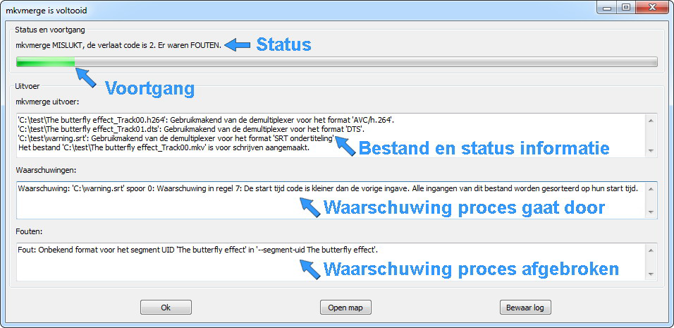
Plaatje 13: Het samenvoeg scherm
Mkvmerge, kent drie verschillende Prioriteitsniveaus voor haar berichten: Status rapporten, waarschuwingen en fouten. Alle statusrapport berichten worden weergegeven in het bovenste venster. Deze omvatten alle tegengekomen spoortypen en andere interessante dingen.
Waarschuwingen worden getoond in het middelste scherm. Mkvmerge, zal niet afbreken als het een waarschuwing afgeeft maar het kan het samen voegen stoppen voor het spoor waarvoor de waarschuwing is afgegeven. Je moet nauwkeurig aandacht besteden aan alle waarschuwingen.
Fouten worden getoond in het onderste scherm. Fouten zijn altijd fataal, en mkvmerge zal direct stoppen nadat het een foutbericht afgeeft. Dergelijke berichten zouden kunnen zijn, dat de harde schijf vol is of dat het bronbestand beschadigd is en verder niet uitgevoerd kan worden.
De knop Afbreken geeft aan mkvmerge de opdracht te
stoppen met het samenvoeg proces. Tenzij mkvmerge vastzit in een eindeloze
lus zal het snel stoppen nadat je de knop hebt ingedrukt. Met Bewaar log
kan je de volledige uitvoer van mkvmerge opslaan in een tekstbestand voor verdere
bestudering. Of in het geval dat je tegen een bug aanloopt en mij wat meer
informatie wilt sturen.
Al je noeste werk om alles in te stellen, hoeft niet verloren te zijn gegaan
wanneer je het programma verlaat. Je kunt al je samenvoeg instellingen opslaan in
een tekst bestand met de Bewaar instellingen optie in het menu
Bestand en ze later herstellen met de Laad instellingen optie.
De standaard extensie is .mmg en wordt gewoonlijk niet door andere
progamma's gebruikt. Je kunt deze extensie ook associëren met mmg, zodat de
instellingen automatisch geladen worden wanneer je een dergelijk instellingen
bestand oproept.
In het geval dat je meerdere bestanden wilt samenvoegen, dan hoef je niet het eerste bestand te prepareren, wachten totdat het klaar is met samenvoegen en dan het volgende bestand prepareren. Mkvmerge GUI heeft een taak manager waarmee je volledige taken in een wachtrij kan plaatsen. Ze één voor één uitvoeren voor jouw gemak. De basis stappen voor de taak manager zijn:
Voeg toe aan taak wachtrij en selecteer een titel waarnaar
deze taak verwijst.Samenvoegen
en kies Beheer taken.Start knop.
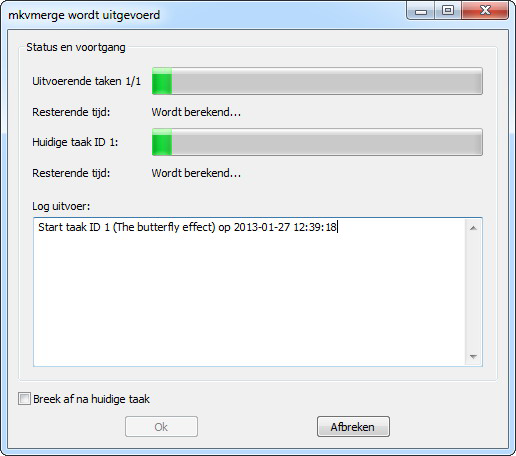
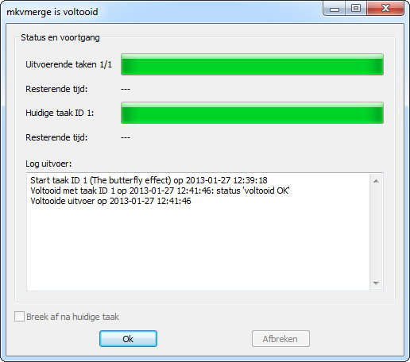
Plaatje 14: Taak wachtrij dialoog één in uitvoerring (tijd in berekening)
Plaatje 15: Taak wachtrij dialoog één taak voltooid
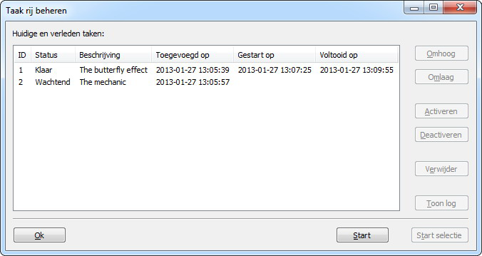
Plaatje 16: Taak rij beheer dialoog één klaar één wachtend
Elke taak heeft zes attributen: Een ID welke automatisch wordt gekozen door
mkvmerge GUI; zijn status (Wachtend het is nog niet
samengevoegd, Klaar samenvoegen succesvol voltooid,
Klaar met waarschuwing(en) het samenvoegen is succesvol voltooid maar
er waren waarschuwing(en), Mislukt het samenvoegen is mislukt); de
naam die je eerder hebt ingegeven, de datum en tijd dat de taak werd toegevoegd
aan de taak wachtrij, de datum en tijd dat het samenvoeg proces werd
gestart voor deze taak, de datum en tijd wanneer het samenvoeg proces werd voltooid.
De algemene knoppen vind je aan de onderzijde. De Start
knop zal het samen voegen starten van alle geselecteerde taken waarvan de taak status
Wachtend is. De knop Start geselecteerde zal het samen voegen
starten van alléén de geselecteerde taken onafhankelijk van hun status.
Met de knoppen aan de rechterkant kan je alle taken manipuleren. De knoppen
Omhoog en Omlaag verplaatst de geselecteerde taken
omhoog of omlaag in de lijst. De knop Activeren stelt de taak status
in naar Wachtend zodat ze gestart zullen worden nadat er op de knop
Start is gedrukt. De knop Deactiveren zal de status
op Klaar zetten.
Gedurende het samenvoegen, zal mkvmerge's uitvoer niet worden getoond
maar opgeslagen worden. Als je de taak uitvoer wilt zien, dan moet je op de knop
Toon log drukken. Dit is handig, indien er een taak werd voltooid met een
waarschuwing of indien het volledig mislukte.
Eén van de nieuwe mogelijkheden van mmg is een volledige uitgeruste hoofdstuk bewerker. Het kan tekst gebaseerde hoofdstuk bestanden lezen, hoofdstukken importeren van bestaande Matroska™ bestanden, in tekst geschreven hoofdstuk bestanden kunnen geselecteerd worden op de Globale tabblad en de hoofdstukken direct wegschrijven naar een bestaand Matroska™ bestand.
In tegenstelling tot vele andere systemen ondersteunt Matroska™ geneste hoofdstukken. Dit houd eigenlijk in, dat je sub hoofdstukken kan toevoegen aan hoofdstukken.
Een hoofdstuk eenheid in Matroska™ bestaat uit tenminste vier items: Het UID van de spo(o)r(en) dit geldt voor het hoofdstuk titel / naam, de start tijd en de geassocieerde taal code. Extra elementen zijn optioneel en bevatten het eind tijd, meer taal codes en land codes. Meestal heeft de gebruiker alléén maar de verplichte elementen nodig. Hiervan, kan hij alleen de naam, de starttijd en de taal code specificeren. Mkvmerge zal dan automatisch alle hoofdstukken toewijzen aan het volledige bestand.
Het eerste voorbeeld is een makkelijke. De desbetreffende film bevat vier delen: De intro aan het begin, eerste bedrijf, het tweede bedrijf, en de aftiteling. Opmerking, eindtijdcodes zijn optioneel.
Intro (vanaf 00:00:00, taal Nederlands)
Bedrijf 1 (vanaf 00:01:00, taal Engels)
Bedrijf 2 (vanaf 00:05:30, taal Engels)
aftiteling (vanaf 00:12:20 tot 00;12:55, taal Engels)
Een meer complex voorbeeld inclusief een sub hoofdstuk(ken). Laten we Ludwig van Beethovens opera Fidelio nemen. Kortheidshalve, voeg ik alleen met de eerste drie delen toe van de twee bedrijven.
Het eerste bedrijf bevat:
Het eerste bedrijf, welke ons eerste hoofdstuk zal zijn, heeft een gecombineerde lengte van 11:20. Ons tweede bedrijf heeft een lengte van 17:06. Deze hoofdstukken zien er ongeveer als volgt uit:
Eerste bedrijf (van 00:00:00 tot 00:11:20, taal Duits,
land Duitsland)
Intro (van 00:00:00 tot 00:06:24, taal
Duits, land Duitsland)
Aria: 'Jetzt, Schätzchen, jetzt sind wir allein'
(van 00:06:24 tot 00:11:10, taal Nederlands, land Duitsland)
Dialoog: 'Armer Jaquino' (van 00:11:10 tot 00:11:20,
taal Duits, land Duitsland)
Tweede bedrijf (van 00:11:20 tot 00:28:26, taal Duits,
land Duitsland)
Intro en Aria: 'Gott! welch Dunkel hier!'
(van 00:11:20 tot 00:22:06, taal Duits, land Duitsland)
Melodrama en Duet: 'Wie kalt ist es' (van 00:22:06
tot 00:27:27, taal Duits, land Duitsland)
Dialoog: 'Er erwacht!' (van 00:27:27 tot 00:28:26,
taal Duits, land Duitsland)
Mkvmerge en mmg's ondersteunen beide verschillende hoofdstuk formaten voor hoofdstukken.
Eén meest simpele formats is de format dat gebruikt wordt in OGM bestanden. Het is een tekst gebaseerd format. Elk hoofdstuk deel bevat twee regels, de eerste bevat de start tijd, en het tweede de hoofdstuk naam. Alle regels zijn genummerd.
Het eerste voorbeeld van hierboven kan worden uitgedrukt in dit format:
CHAPTER01=00:00:00.000
CHAPTER01NAME=Intro
CHAPTER02=00:01:00.000
CHAPTER02NAME=Bedrijf 1
CHAPTER03=00:05:30.000
CHAPTER03NAME=Bedrijf 2
CHAPTER04=00:12:20.000
CHAPTER04NAME=Aftiteling
Het tweede voorbeeld kan niet worden uitgedrukt in dit formaat, omdat het geen taalspecificaties noch eind tijden of geneste hoofdstukken ondersteunt. Het voordeel is, dat dergelijke bestanden erg eenvoudig te maken zijn, en er zijn verschillende hulpmiddelen beschikbaar voor zowel Windows als Unix / Linux die dergelijke bestanden direct vanaf Dvd's kunnen maken.
Door de beperkingen van mmg kan het géén hoofdstukken uitvoeren in dit format.
Ik heb een XML gebaseerd hoofdstuk formaat gemaakt, dat overeenkomt met het systeem waarvan Matroska™ gebruik maakt. Met dit format, heb je volledige controle over alle mogelijkheden. Ik zal de format hier niet in detail beschrijven. Neem eens een kijkje bij de XML hoofdstuk voorbeeld bestanden die mee kwamen met mkvtoolnix.
Het hoofdstuk bewerker kan hoofdstukken direct inlezen van Matroska™ bestanden. Deze kunnen worden geschreven naar XML hoofdstuk bestanden en terug naar hetzelfde Matroska™ bestand of een ander Matroska™ bestand. Alle mogelijkheden worden ondersteund.
Het hoofdstuk bewerker bestaat uit drie delen: Het boomstructuur aanzicht van alle hoofdstukken, de drie knoppen om hoofdstukken toe te voegen of te verwijderen. Twee invoervelden die worden gebruikt voor de instellingen van het hoofdstuk delen. Een knop voor Bijwerken tijd codes is voor het wijzigen van de alle tijd codes waarvan, mmg automatisch uitlegt wat het kan doen.
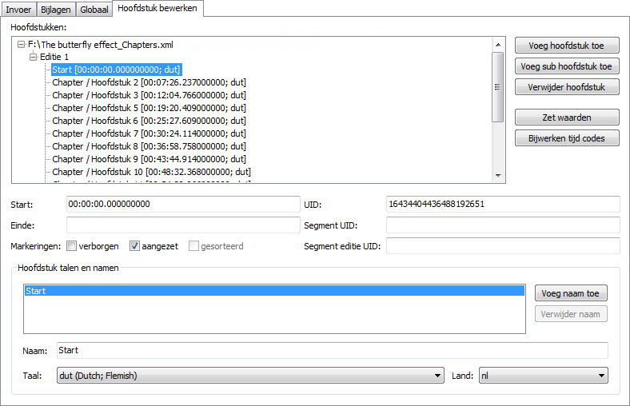
Plaatje 17: De hoofdstuk bewerker toont het voorbeeld van hierboven
In Matroska™ bestanden worden hoofdstukken gedefinieerd met een start en eind tijd en een naam met bijbehorende taal. Je kunt verschillende namen hebben voor één hoofdstuk en elk daarvan kan gekoppeld worden aan een andere taal. Je kunt ook een eind tijd ingeven maar dat is niet verplicht.
Een nieuw hoofdstuk bestand wordt gestart met de Nieuw hoofdstuk
optie in de Hoofdmenu >> Hoofdstuk bewerken.
Je kunt hoofdstukken toevoegen met Voeg hoofdstuk toe of Voeg sub hoofdstuk toe
knoppen. Het verschil tussen deze twee knoppen is, dat wanneer een hoofdstuk is geselecteerd Voeg hoofdstuk toe
een hoofdstuk zal toevoegen op hetzelfde niveau direct na het geselecteerde
hoofdstuk en Voeg sub hoofdstuk toe zal een hoofdstuk toevoegen als
laatste sub hoofdstuk van het huidig geselecteerde hoofdstuk.
Het Verwijder hoofdstukmoet je met zorg behandelen. Het verwijdert het volledige
hoofdstuk incl. alle sub hoofdstukken zonder een bevestiging te vragen, en op het moment is er
géén mogelijkheid dit te herstellen (weg is ook echt weg).
Nadat je een hoofdstuk ingang hebt geselecteerd, kan je de data daarvan
veranderen. De begin-en eindtijd kunnen zijn, ofwel HH:MM:SS.mmm
of gewoonweg HH:MM:SS. Eén hoofdstuknaam is reeds
toegevoegd. Je kunt het bewerken, de taal instellen die voor deze naam is
ingegeven. Op deze manier kan je namen in verschillende talen ingeven, b.v.
'The hero arrives' met 'eng' als de taal en 'De held arriveert' met 'dut' als
de taal. Druk gewoon op de Voeg naam toe knop als je meer ingangen
wenst en Verwijder naam om er één te verwijderen.
Aanmaken van véél hoofdstukken en altijd de taal instellen kan een hele klus zijn. Daarom
kan je in mmg taal en land markeringen instellen, welke als standaard gebruikt moeten
worden via het volgende Hoofd menu >>
Opties >> Hoofdstukken
Het Zet waarden knop doet iets soortgelijks. Hiermee kan je een taal en/of land
instellen voor het huidige geselecteerde ingaven en allen die daarbij behoren.
Opslaan van hoofdstukken naar XML bestanden kan gedaan worden met Opslaan of
Bewaar als. Bewaar als kan niet gebruikt worden om hoofdstukken
te bewaren naar een bestaand Matroska™ bestand.
Je moet daarvoor gebruiken Bewaar als Matroska™ bestand.
Je kunt bestaande hoofdstuk bestanden of hoofdstukken van Matroska™
bestanden laden, door te kiezen Laden optie van de Hoofdstuk bewerker menu.
Mmg zal automatisch het gebruikte bestandstype detecteren en de hoofdstukken inlezen.
Mmg komt met een bewerker voor kop velden van bestaande Matroska™ bestanden. Het kan gestart worden via mmg's "Bestand" menu door te kiezen: "Kop bewerken".
Met de Kop bewerker, kan de gebruiker bepaalde velden van de gesegmenteerde informatie koppen en de koppen van elk spoor bewerken, zonder dat het hele bestand opnieuw samengevoegd moet worden. Het gebruik is gemakkelijk: laad een bestand, selecteer het bewuste kop veld dat je wilt veranderen, verander de waarde en sla het bestand op.
De Matroska™ bestandsformat staat toe, dat de meeste kop velden aan of afwezig kunnen zijn. Mmg's kop bewerker zal alle invoer tonen van alle ondersteunde kop velden zelfs, wanneer deze nog niet in het bestand aanwezig zijn. Het staat de gebruiker toe, velden toe te voegen die op het moment nog niet in het bestand aanwezig zijn. Of zelfs bestaande tekst velden uit het bestand verwijderen.
De gebruiker kan starten met een bestand te bewerken door te kiezen: "Open" van het "Bestand" menu. Na het selecteren van het juiste bestand, zal de kop bewerker het bestand scannen op alle belangrijke elementen. Dit kan even duren afhankelijk van de bestandsgrootte. Dit is noodzakelijk vanwege de Matroska™ 's flexibele bestandsstructuur.
Na het openen van het bestand, zal het linker scherm de elementen tonen voor het segment koppen en één element voor elk spoor dat in het bestand gevonden is. Elk deel in de boomstructuur, bevat een aantal sub elementen welke de werkelijke waarde van de kop bevat. Wanneer de gebruiker een dergelijk sub element selecteert, wordt het rechter scherm opgewaardeerd met de actuele informatie van dat element:
Meeste waarde soorten spreken voor zich, getallen, reeksen etc. Het binaire type, wordt echter getoond als een reeks hexadecimale cijfers. De toegestane formaten zijn hetzelfde als verschillende opties waarmee mkvmerge segment UID's specificeert: ofwel een eenvoudige opeenvolging van hexadecimale cijfers (bijvoorbeeld 1857a7fe7d...) of de hexadecimale getallen voorafgegaan door "0x" voor elk paar (bijv. 0x18 0x57 0xa7 0xFE 0x7d...).
De gebruiker kan de veranderingen verifiëren door te kiezen voor "Verifiëren" uit het "Kop bewerken" menu. Verifiëren wordt ook elke keer automatisch uitgevoerd wanneer de gebruiker het bestand wil opslaan. Verifiëren zorgt er voor, dat de waarden die de gebruiker heeft ingevoerd, opgeslagen kunnen worden in het desbetreffende element. Bijvoorbeeld, een getal element mag géén letters bevatten.
Als verifiëren mislukt, dan wordt het eerste mislukte element verificatie geselecteerd, zodat de gebruiker de fout kan corrigeren.
De gebruiker kan de wijzigingen opslaan door te kiezen: "Opslaan" van het "Hoofdstuk bewerken" menu. Zijn er géén veranderingen gemaakt, dan zal mmg dat zeggen en het bestand niet opslaan.
Voor het wijzigen van een bestand, zal MMG controleren of het bestand is gewijzigd door een ander programma, wanneer het is geopend. Als dat het geval is, dan zal mmg de gebruiker waarschuwen. Alle veranderingen negeren en het bestand laden, om ervoor te zorgen dat het bestand niet wordt beschadigd.
Mmg zal heel hard proberen, om geschikte plekken te vinden voor het schrijven van de gewijzigde koppen. Het zal bestaande kop elementen overschrijven op de originele positie, Ebml Void elementen en alle andere exemplaren van de koppen die het vindt. Het zal ook de meta zoek koppen bijwerken, zodat de koppen gemakkelijk gevonden kunnen worden door applicaties die het bestand inlezen.
Na het opslaan van het bestand, zal het kopstuk bewerker het bestand automatisch herladen en het opnieuw analyseren. Dit wordt gedaan, om te voorkomen dat er géén bestandsbeschadiging optreedt. Omdat het proces van het opslaan van het bestand aanzienlijk vertraagt. Deze veiligheidsvoorziening, zal in de toekomstige versie van mmg verwijderd worden, nadat het voldoende is uitgetest.